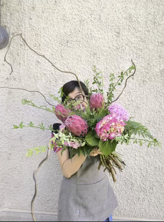

La Nostra Storia
Un Secolo di Passione e Bellezza

"I fiori non sono solo decorazione, sono il linguaggio silenzioso del cuore."
— Anna BertoLa Nostra Filosofia
Da oltre cento anni, la famiglia di Anna coltiva il segreto della bellezza effimera. Nati nel cuore della Val di Susa, abbiamo attraversato decenni di cambiamenti, restando sempre fedeli alla nostra missione.